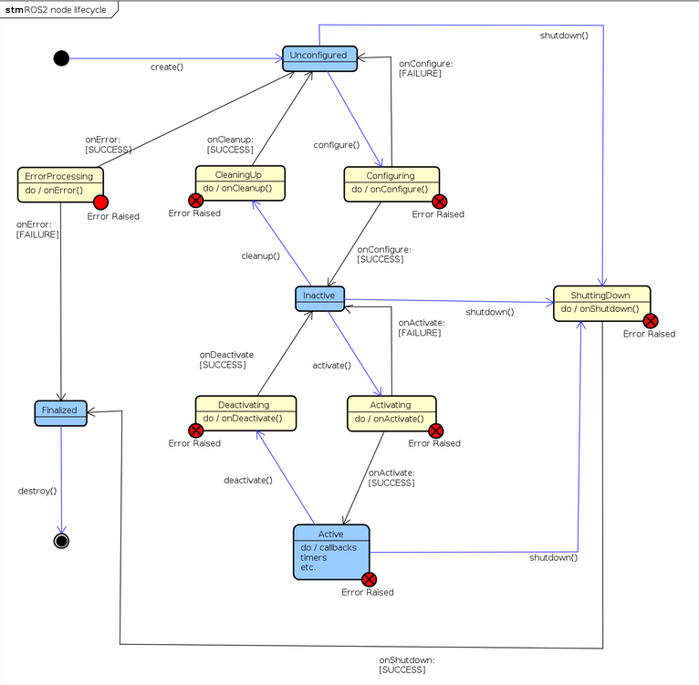
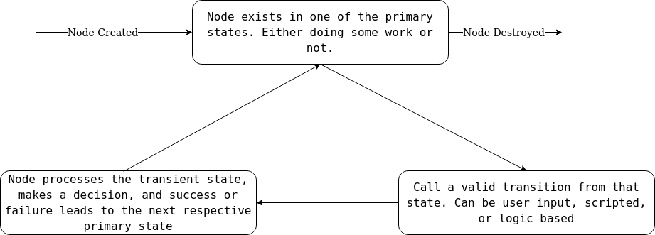

layout: true <div class="header"><img src="https://rosin-project.eu/wp-content/uploads/rosin_ack_logo_wide.png" style="background-color:transparent"/></div> <div class="footer"><img src="https://www.ipa.fraunhofer.de/content/dam/ipa/ipa.svg" /><p>© Fraunhofer IPA</p></div> <div class="triangle"></div> --- class: center, middle name: main_title # ROS 2 EXTENDED CONCEPTS --- ## 1. Managed Nodes ## 2. Quality of Service --- ## 1. Managed Nodes ### 1.1 State Machine ### 1.2 States ### 1.3 Standard Interfaces ### 1.4 Command Line Interface (CLI) ### 1.5 Launch Files --- ## 1. Managed Nodes * Common complaint in ROS 1 - no way to control lifecycle of nodes. * Ex: Sensor reader starts before sensor driver! * ROS 2 solution - *Managed Nodes* with detailed lifecycle management * CPP implemented, Python pending * Nodes subclassed from `rclcpp_lifecycle::LifecycleNode` instead of the usual `rclcpp::Node` * Conform to a known interface and known lifecycle state machine. * Also referred to as Lifecycle (LC) Nodes --- ## 1.1 Managed Nodes State Machine * The state machine has: * `Primary States` - Steady states. More time spent here. * `Secondary States` - Transient states. Handle transitions. * `Transitions` - Trigger a state change. Can be called by user via launch files, manager nodes & CLI service calls. ---  --- ## 1.2.1 Primary States * `Unconfigured` - First state that a node starts with, and ends up in after an error. No execution. Main purpose is error recovery. * `Inactive` - The node holds resources (publishers, listeners etc..) and configuration (params, internal variables), but does nothing. No execution, no transmissions, incoming data could be held in buffer, but not read. Main purpose is to allow reconfiguration. * `Active` - Everything is up and running. Normal execution. * `Finalized` - Node is already destroyed. Used for debugging only. --- --- ## 1.2.2 Secondary States Executes standardized callback functions. User code goes here. * `Configuring` - Executes `onConfigure()` - Load configuration, lengthy setup steps, acquire resources used over node lifetime like constant publishers/listeners, memory buffer allocation etc... * `CleaningUp` - Executes `onCleanup()` - Relinquish resources, wipe memory. Fresh start, clean slate. * `Activating` - Executes `onActivate()` - Acquire short term resources like sensors, activate all resources. Short setup time. Start main node mission tasks. * `Deactivating` - Executes `onDeactivate()` - Reverse the `Activating`steps. Pause execution, release short term resources. * `Shutting Down` - Executes `onShutdown()` - Final steps. Delete whatever remains. No coming back from here. * `ErrorProcessing` - Executes `onError()` - Error handling state. If error can be handled, recover to `Unconfigured`, else, go to `Finalized` to destroy the node. Meaningfully implementing the callback functions avoids malformed nodes. --- ## 1.2.3 Typical State Flow  --- ## 1.3 Standard Interfaces * Creating a lifecycle node exposes some standard interfaces * Services: * `<ns>/change_state` - Call to trigger a legal transition * `<ns>/get_available_transitions` - Show legal transitions * `<ns>/get_state` - Show current state * `<ns>/get_available_states` - List all states * `<ns>/get_transition_graph` - Show full state machine * Topic: * `<ns>/<node_name>__transition_event` - Publishes ongoing transitions --- ## 1.4 Lifecycle CLI * Lifecycle nodes can be controlled via services, but also via the `ros2 lifecycle` command. * `ros2 lifecycle nodes` - List all LC nodes * `ros2 lifecycle get <?node>` - List current state of specified node, or all LC nodes. * `ros2 lifecycle list <node>` - List possible next states and respective transition calls (name and ID) for the specified node. * `ros2 lifecycle set <node> <transition>` - Trigger a transition (by name or ID) on a LC node. --- ## 1.5 LC Management in Launch Files ROS 2 Python Launch files offer some LC API: * `launch_ros.actions.LifecycleNode(..)` defines a LC node * `launch_ros.event_handlers.OnStateTransition(..)` performs an action when a LC node transitions from one state to another * `launch.actions.EmitEvent(..)` selects the desired event to trigger * `launch_ros.events.lifecycle.ChangeState(..)` creates a change state event by selecting a transition for a LC node * `lifecycle_msgs.msg` holds enums for state and transition names --- ## 2. Quality of Service (QoS) ### 2.1 Policies ### 2.2 Profiles ### 2.3 QoS Compatibility --- ## 2. QoS * ROS 1 communication protocol: * TCP by default. Lossless transmission. High Latency. Reliable. * UDP possible. Lossy transmission. Low latency. Unreliable. Not as richly implemented as TCP. * ROS 2 communication protocol: * Default UDP only. (But DDS dependent). Light weight, permits real-time communication. * Apply QoS policies to flexibly vary anywhere between TCP and UDP. * QoS: A combination of *policies*, called a *profile*, applied to publishers, subscribers, service servers and clients, which defines the quality of communication between these entities. * Implemented for C++ and Python. * C++: [qos.h](http://docs.ros2.org/eloquent/api/rclcpp/qos_8hpp_source.html) comes included with `<rclcpp.h>`. * Python: `import rclpy.qos` * Create a QoS object, set the different policies or assign an existing profile. * Pass the QoS object as a parameter when creating the resource. --- ## 2.1 Policies | No. | POLICY NAME | DESCRIPTION | POSSIBLE VALUE | |-----|----------------------|--------------------|------------| | 1 | History | How many incoming data samples (N) to store. | keep_last(size_t N)/keep_all() | | 2 | Reliability | Guaranteed lossless with retransmission or best attempt with losses. | reliable()/best_effort() | | 3 | Durability | Publisher persists samples for late joining subscribers or not. | transient_local()/volatile() | | 4 | Deadline | Maximum acceptable time between messages on a topic. | duration(rmw_time_t/rclcpp::Duration)| | 5 | Lifespan | Maximum time that a message can sit in a publisher's out buffer. | duration(rmw_time_t/rclcpp::Duration) | | 6 | Liveliness | Heartbeat frequency. | duration(rmw_time_t/rclcpp::Duration) | | 7 | avoid_ros _namespace_conventions | Circumvent ROS 2 specific naming conventions like "rt_". Suitable for native DDS communication. | True/False | --- ## 2.2 Profiles * Combination of policies. Easier to select a profile instead of worrying about individual policies. * Some default profiles already available (Ex C++: [qos_profiles.h](https://github.com/ros2/rmw/blob/master/rmw/include/rmw/qos_profiles.h)): * **Default** : Applied by default if not specified. Mimic ROS 1. *keep_last(10),reliable(),volatile()...* * **Services** : Typically services should be reliable. Volatile to avoid outdated requests. *keep_last(10),reliable(),volatile()...* * **Parameters** : ROS 2 parameters are accessed via services. Similar profile, but longer depth to retain more parameters in buffer. *keep_last(1000),reliable(),volatile()...* * **Sensors** : Sensor data needs to have minimum latency to remain relevant, at the cost of losing some samples. *keep_last(5),best_effort(),volatile()...* * You can create a custom profile as well. For example, to make a latched publisher : `rclcpp::QoS qos_profile(10); qos_profile.reliable().transient_local();` --- ## 2.3 QoS Compatibility **QOS RESOURCES CAN ONLY PAIR IF THEY ARE COMPATIBLE** * QoS profiles are assigned to each resource individually. * Resource compatibility is based on "Request vs Offerer" model * Paired only if subscriber/client is **as/less strict** than publisher/server. * The less strict policy of the two is then adopted for the connection. * Only durability and reliability considered for this. Both must be satisfied. * Durability strictness : transient_local > volatile * Reliability strictness : reliable > best best_effort Examples: PUBLISHER | SUBSCRIBER | PAIR? | RESULT -------------|-------------|-------|------------- best_effort | reliable | No | . reliable | best_effort | Yes | best_effort best_effort | best_effort | Yes | best_effort reliable | reliable | Yes | reliable --- ## Further reading Try the ROS 2 Managed Nodes [demo](https://github.com/ros2/demos/tree/master/lifecycle) to get a better understanding. Try the ROS 2 QoS [tutorials](https://docs.ros.org/en/foxy/Tutorials/Quality-of-Service.html) to get a better understanding.